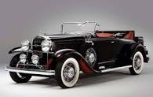
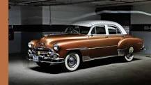
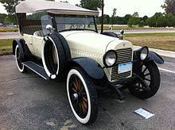

Usually, the classic car moniker applies to vehicle over 20 years old.Antique cars are over 45 years old, and vintage cars are built between 1919 and 1930. But as with many subjects in the motoring world,
 A classic car is an older automobile, typically 20 years or older, though definitions vary.The common theme is of an older car of sufficient historical interest to be collectable and worth preserving or restoring. 
The difference between Classics, Vintage & Antique Cars. ... Usually, the classic car moniker applies to vehicles over 20 years old. Antique cars are over 45 years old, and vintage cars are built between 1919 and 1930.